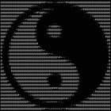
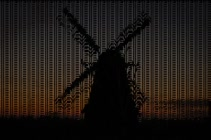
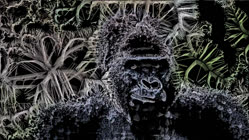
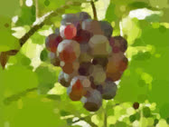
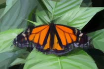
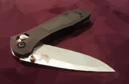

Home
Projects
_image-manipulation:
A collection of cool programs i find interesting with examples on how to use them in the terminal,
See here
Ascii-image-converter:
Terminal program to convert images to ascii art,
See here

Ascii_py:
Python cli program to convert images to ascii art,
See here

G'mic:
A free and open source framework for image processing, With gui and cli version for Gimp, Krita and many more programs,
See here

Geometrize:
Cool gui and cli program to convert images to basic shapes,
See here

Primitive:
Amazing cli program to take images and turn them to primitive shapes,
See here

Triangle:
Ultra fast and efficient cli program that convert your images to polygonal arts in fraction of second,
See here
Triangula:
Gui and cli program that aim to recreate trianglated art seen in pop culture,
See here

ffmpeg-examples:
A repo to show some examples of how to use ffmpeg for every day use,
see here
Sequence, Manipulate, Mux:
Basic usage examples of youtube-dl, ffmpeg and some extra programs,
See here
Video filters for ffmpeg and mpv:
Apply filters to videos on ffmpeg and mpv, with video examples,
See here
Frei0r filters, with a zer0:
Apply frei0r filters with ffmpeg and mpv,
See here
{kind=link}
{kind=link}
{kind=link}
{kind=link}
{kind=link}
{kind=link}
{kind=link}